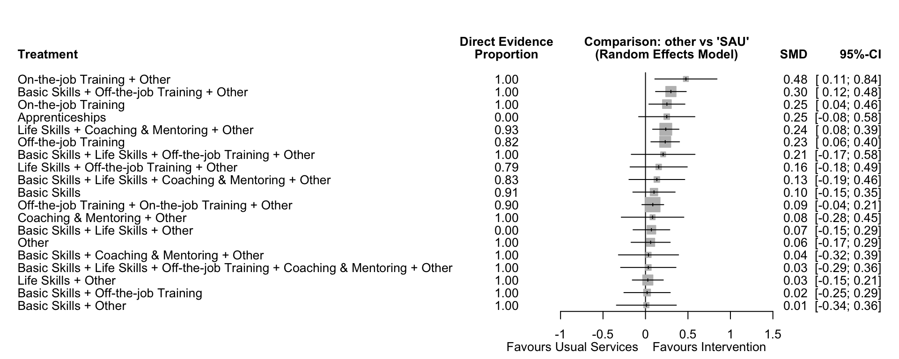
A network meta-analysis of employment and skills interventions designed to assist young people to enter the labour market in high income countries: supplementary material
David Taylor ![]()
Aron Shlonsky
1 About
This page contains supplementary material for a network meta-analysis titled “A network meta-analysis of employment and skills interventions designed to assist young people to enter the labour market in high income countries”.
The following information is provided here:
- Identification and selection of relevant studies — this section contains additional information on our search strategy
- Extraction and transformation of information from relevant studies — this section contains information on a) what we extracted from included studies, b) how we selected outcomes where multiple options existed and c) a log of decisions we made in the transformation of reported resutls into a common effect size
- Supplementary information about included and excluded studies — this section contains information on a) how we distinguished between multiple reports of the same study, b) studies we rejected at full-text review and c) details of studies that reported outcomes they we were not able to to quantitatively synthesise in a network meta-analysis.
- Analysis of relevant studies — this section contains the full results of the quantitative synthesis that we undertook, including interaction models, subgroup analysis, sensitivity analysis, publication bias assessments and incoherence assessments.
The analysis code is available in a GitHub repository.
2 Identification and selection of relevant studies
2.1 Additional detail on search strategy
All impact evaluations classified as either ‘low’, ‘medium’ or ‘high-quality’ included in the (apunyo2022interventionsincreaseyouth?) EGM were screened for relevance if they appeared in any of the following intervention categories (as defined by the EGM):
Life skills
Internship and apprenticeships
Employee mentoring (inc. on-the-job training)
These categories were further filtered using the following outcome categories:
Employment status and duration
Hours worked
Earnings and salary
Education completion and qualification
2.2 Grey literature search strategy
| Source | Search method | Date searched |
|---|---|---|
| Pathways to Work Evidence Clearinghouse | All programs and/or interventions for “young adults (aged 16-24)” were reviewed | 23/08/2022 |
| Clearinghouse for Labor Evaluation and Research (CLEAR) | We searched the term “youth employment” and “evaluation” and screened all studies for relevance. | 11/07/2022 |
| United Kingdom Department for Work and Pensions (DWP) | We searched “youth employment” and “evaluation.” Additionally, we searched the data archive by category of subject “young people.” |
11/07/2022 |
| United Kingdom Department for Education (DfE) | We searched the national archives using the adult learning and workplace training filters. | 11/07/2022 |
| United States Administration for Children and Families, Office of Planning, Research and Evaluation (OPRE) | We searched using the terms “youth employment” and “evaluat*” | 11/07/2022 |
| Organisation for Economic Co-operation and Development (OECD) | We searched using: (All Fields contains ‘“youth employment”’) from (Language contains ‘en’) AND from (All Fields contains ‘evaluat*’) AND from (IGO collection contains ‘“igo/oecd”’) with type(s) subtype/article OR subtype/workingpaper |
11/07/2022 |
| World Bank | We searched using the terms “youth employment” and “evaluat*”. | 11/07/2022 |
| Institute of Labor Economics (IZA) | We searched using the terms “youth employment” and “evaluat*”. | 11/07/2022 |
| MDRC | We searched using the term “youth employment” with the publication filter set to report/working paper/brief. | 11/07/2022 |
| Google Scholar | The first fifty results using the following search terms were reviewed: “Youth Employment” + “evaluat* | 11/07/2022 |
| PICOSS | Inclusion Criteria | Exclusion Criteria |
|---|---|---|
| Population | Young people aged between 16 and 30 | Young people aged less than 16 or over 30 |
| Intervention | Programs or Interventions need to involve the provision of one or more of the following components:
|
Interventions that solely involve other components |
| Comparison | Usual services, no intervention, other services, or wait-list control | Studies using other comparators |
| Outcome | Studies that examine: Primary outcome
Secondary outcome
|
Studies that examine other outcomes |
| Study design | Experimental designs:
Quasi-experimental designs:
Studies based on:
|
Non-primary studies, including:
Studies without a valid counterfactual, including designs that do not use a parallel cohort that establishes or adjusts for baseline equivalence, including:
|
| Setting | Studies undertaken in high income countries as defined by the (World Bank, 2022). | Studies undertaken in low or middle income countries as defined by the (World Bank, 2022). |
| Other | Studies published in English. | Studies published in languages other than English. |
3 Extraction and transformation of information from relevant studies
3.1 Data extracted from included studies
| Category | Detail |
|---|---|
| Bibliographic information | Author, title, year of publication |
| Intervention details | Intervention name, relevant components (treatment), relevant components (comparison), year intervention commenced, year intervention ended, year study commenced, year study ended, Inclusion criteria, exclusion criteria, intervention length, intervention delivery mode, comparison type, comparison intervention (if relevant) |
| Setting | Study location (country) |
| Population | Sample size, # treatment, # comparison, gender (% female), ethnicity, self-reported disability, elevated risk |
| Study design | Study design, study method |
| Outcomes | Outcome domain, outcome measure, time of measurement |
| Results | Result type, reported result (treatment), reported results (comparison), reported standard error (SE)(treatment), reported SE (comparison), reported or derived standard deviation (SD) (treatment effect or treatment), reported or derived SD (comparison), reported treatment effect (TE) type, reported TE, reported TE SE, reported TE 95 per cent confidence interval (CI) (lower), reported TE 95 per cent CI (upper), reported TE t-stat, stat. sig (p-value), reported effect size (ES) type, reported ES, reported ES 95 per cent CI (lower), reported ES 95 per cent CI (upper), reported ES t-stat, ES stat. sig (p-value) |
3.2 Outcome selection criteria
| Term | Definition |
|---|---|
| Ever worked | An individual was employed at any point, for any duration, after commencement of the intervention |
| Worked in previous period | An individual was employed at any point, in a defined period of time prior to measurement for any duration after intervention commencement |
| Currently working | An individual was employed, in any capacity, at time of measurement after intervention commencement |
| Employment probability | The probability an individual was employed, at any point, for any duration, after intervention commencement |
3.3 Record of methodological decisions
| Primary reference | Outcome | Identified Issue | Decision |
| Alegre, Casado, Sanz, & Todeschini (2015) | Employment status | Results for both starters (ITT) and completers (TOT) are reported | We used the results for starters |
| Alegre et al. (2015) | Employment status | Only the sample size for the treatment group was reported | We assumed that that 1:1 matching was used and therefore the size of the control group matched the treatment group |
| Alegre et al. (2015) | Employment status | Results are only reported graphically. It was possible to extract the mean difference (and confidence interval) from the reported figure. | Authors were not able to provide results, so these were extracted using a plot digitizer tool (PlotDigitizer Online App, n.d.). |
| Alegre et al. (2015) | Employment status | The information was insufficient to transform into a common effect size using functions available in the esc R package (Lüdecke, 2019). | The mean difference and confidence interval were standardised by dividing by their standard deviation (which was derived from the extracted confidence intervals). |
| Bloom, Orr, Cave, Bell, & Doolittle (1993) | Employment status / Education completion | Treatment and control group sample sizes are not reported, only overall sample | Treatment and control group sample sizes are estimated from the ratio reported by the authors (treatment: 2/3, control: 1/3) |
| Brunetti & Corsini (2017) | Employment status | The authors report four models based on different matching specifications: stratification matching, radius matching, nearest neighbour matching, kernel matching. All of the results are similar. | We selected the model based on kernel matching. |
| L. Centeno, Centeno, & Novo (2008) | Employment status | The authors report four models using different DiD specifications: unrestricted DiD, restricted DiD, DiD with PSM (kernel) matching, DiD with PSM (spline) matching. All of the results are similar. | We selected a DiD model using PSM (kernel) matching based on author preferences |
| L. Centeno et al. (2008) | Employment status | The authors report inconsistent numbers of participants their summary statistics (Table 1) and model results (Table 2). | After receiving no response from the authors to our query, we have used the numbers reported in Table 1 |
| Caliendo, Künn, & Schmidl (2011) | Employment status | The number of observations in the control group are not reported | Control group sample sizes are estimated from the average ratio (1:20) reported by the authors |
| Caliendo et al. (2011) | Employment status | Results for different geographies (states of former East and West Germany) are reported separately | These outcomes were combined by adding percentages |
| Courtney, Valentine, & Skemer (2019) | Education completion | High school completion and attainment of general education development results were reported separately | These outcomes were combined by adding percentages |
| De Giorgi (2005) | Employment status | Male and Female results reported separately | Results for Males and Females were combined in a meta-analysis to obtain a pooled effect for this program |
| De Giorgi (2005) | Employment status | Treatment and Comparison group sizes are not reported | We assumed that that 1:1 matching was used and therefore the size of the control group matched the treatment group |
| Duarte, Geraci, Granato, Mazzarella, & Mortagua (2020) | Employment status | The number of observations in the control group are not reported | We assumed that that 1:1 matching was used and therefore the size of the control group matched the treatment group |
| Duarte et al. (2020) | Employment status | The impact of different lengths of on-the-job training are reported (6 months, 12 months and 18 months) | Results for 6 months and 12 months were combined in a meta-analysis to obtain a pooled effect for this program. Results for 18 months were excluded, as these fall outside our eligibility criteria for this component |
| Ehlert, Kluve, & Schaffner (2012a) | Employment status | SE or SD not reported | SE derived from reported information (regression coefficient and t-statistic), SD calculated from SE |
| Gupta, Srinivasan, Chen, Patterson, & Griffith (2016) | Employment status / Education completion | It is not reported at what point in time outcomes are measured | We have assumed 6 months |
| Hämäläinen & Tuomala (2008) | Employment status | Sample size and standard errors were not reported | This information was provided by the authors |
| Hollenbeck & Huang (2006) | Employment status / Education completion | Results for 2001/02 and 2002/03 were reported separately | These outcomes were combined by adding percentages |
| Hollenbeck & Huang (2016) | Employment status / Education completion | Results for 2001/02 and 2002/03 were reported separately | These outcomes were combined by adding percentages |
| Maibom, Rosholm, & Svarer (2014) | Employment status | Neither the SE or SD was not reported | SE was derived from reported information (regression coefficient and t-statistic), subsequently the SD was derived from the SE |
| Nadon (2020) | Employment status | The two studies reported in this study, uses the same data source as Kim, Ju, Rosenberg, & Farmer (2019) | Kim et al. (2019) selected as the primary study. Nadon (2020) was excluded from the analysis |
| Quint, Bos, & Polit (1997) | Education completion | High school completion and attainment of general education development results were reported separately | These outcomes were combined by adding percentages |
| Rosholm, Mikkelsen, & Svarer (2019) | Employment status / Education completion | Results are only available graphically | Authors were not able to provide results, so these were extracted using a plot digitizer tool (PlotDigitizer Online App, n.d.). |
| Rosholm et al. (2019) | Employment status / Education completion | Sample size for comparison group is not provided | We assumed that that 1:1 matching was used and therefore the size of the control group matched the treatment group |
| Theodos et al. (2017) | Employment status | The authors only reported total observations for each analysis | Control and treatment group sizes were estimated from proportions in the treatment and control group |
4 Supplementary information about included and excluded studies
| Intervention name | Primary reference | Secondary reference(s) |
|---|---|---|
| Inserjovem | L. Centeno et al. (2008) | M. Centeno & Novo (2006) |
| Job Corps | Schochet, Burghardt, & McConnell (2008) | Schochet, Burghardt, & Glazerman (2001) Schochet, Burghardt, & McConnell (2006) Zhang, Rubin, & Mealli (2009) Lee (2009) Flores-Lagunes, Gonzalez, & Neumann (2010) Bampasidou (2012) Bampasidou, Flores, Flores-Lagunes, & Parisian (2014) Frumento, Mealli, Pacini, & Rubin (2012) Blanco, Flores, & Flores-Lagunes (2013b) Blanco, Flores, & Flores-Lagunes (2013a) Blanco & Flores-Lagunes (2017) Gritz & Johnson (2001) Chen (2013) Chen, Flores, & Flores-Lagunes (2018) |
| Job Training Partnership Act (JTPA) — Classroom training | Bloom et al. (1993) | Bloom et al. (1997) Heckman, Ichimura, & Todd (1997) Heckman & Smith (1999) Kornfeld & Bloom (1999) |
| Job Training Partnership Act (JTPA) — OJT/JSA | Bloom et al. (1993) | Bloom et al. (1997) Heckman et al. (1997) Heckman & Smith (1999) Kornfeld & Bloom (1999) |
| Job Training Partnership Act (JTPA) — Other services | Bloom et al. (1993) | Bloom et al. (1997) Heckman et al. (1997) Heckman & Smith (1999) Kornfeld & Bloom (1999) |
| National Guard Youth ChalleNGe | Millenky, Schwartz, & Rhodes (2014) | Millenky, Bloom, Muller-Ravett, & Broadus (2011) Millenky, Bloom, & Dillon (2010) |
| Project SEARCH, plus ASD supports | Wehman et al. (2017) | Wehman et al. (2014) |
| Temporary Work ALMP | Ehlert et al. (2012a) | Ehlert, Kluve, & Schaffner (2012b) |
| Urban Alliance High School Internship Program | Theodos et al. (2017) | Theodos, Pergamit, Hanson, Edelstein, & Daniels (2016) |
| Year Up, Pilot Study | Roder & Elliott (2014) | Roder & Elliott (2011) |
| YouthBuild | Miller, Cummings, Millenky, Wiegand, & Long (2018) | Miller, Millenky, Schwartz, Goble, & Stein (2016) |
| Youth Transition Demonstration Evaluation, Transition WORKS, Erie County, NY | Fraker, Cobb, Hemmeter, Luecking, & Mamun (2018) | Fraker, Mamun, Honeycutt, Thompkins, & Valentine (2014) Fraker, Black, Mamun, et al. (2011) |
| Youth Transition Demonstration Evaluation, Broadened Horizons, Brighter Futures, Miami-Dade County, NY | Fraker, Cobb, et al. (2018) | Fraker, Crane, et al. (2018) Fraker et al. (2014) Fraker, Honeycutt, et al. (2012) |
| Youth Transition Demonstration Evaluation, YTDP, Bronx NY | Fraker, Cobb, et al. (2018) | Fraker et al. (2014) Fraker, Black, Broadus, et al. (2011) |
| Youth Transition Demonstration Evaluation, Career Transition Program, Montgomery County, MD | Fraker, Cobb, et al. (2018) | Fraker et al. (2014) Fraker, Baird, et al. (2012) |
| Youth Transition Demonstration Evaluation, Youth Works, West Virginia | Fraker, Cobb, et al. (2018) | Fraker et al. (2014) Fraker, Mamun, et al. (2012) |
| YVLifeSet | Courtney et al. (2019) | Skemer & Valentine (2016) Valentine, Skemer, & Courtney (2015) |
| Intervention name | Reference(s) | Rationale |
|---|---|---|
| New Deal for Young People, Job Assistance elements | Blundell, Dias, Meghir, & van Reenen (2004) | Wrong Intervention — intervention components fit under “other” |
| Job Search (JS) | Caliendo et al. (2011) | Wrong Intervention — intervention components fit under “other” |
| Job Creation Schemes (JCS) | Caliendo et al. (2011) | Wrong Intervention — intervention components fit under “other” |
| Young Adult Internship Program | Cummings, Farrell, & Skemer (2018) Skemer, Sherman, & Williams (2017) |
Wrong Intervention — intervention components fit under “other” |
| Youth Transition Demonstration Evaluation, Youth Wins, Colorado | Fraker, Cobb, et al. (2018) Fraker et al. (2014) Fraker, Baird, et al. (2011) |
Wrong Intervention — intervention components fit under “other” |
| PIPOL, Internships | Pastore & Pompili (2019) | Wrong Intervention — intervention components fit under “other” |
| Slovenian Institutional Training Program | Rotar (2012a) Rotar (2012b) |
Wrong Intervention — intervention components fit under “other” |
| Independent Living, Employment Services, Kern County CA | Zinn & Courtney (2017) Courtney, Zinn, Koralek, & Bess (2011) |
Wrong Intervention — intervention components fit under “other” |
| Primary reference | Intervention name | Outcome | Effect size reported or can be transformed from reported results | Reason |
|---|---|---|---|---|
| Bloom et al. (1993) | Job Training Partnership Act (JTPA) — Classroom training | Hours worked at Quarter 6 (Female, Male Youth) | No | SD or SE not reported |
| Bloom et al. (1993) | Job Training Partnership Act (JTPA) — OJT/JSA | Hours worked at Quarter 6 (Female, Male Youth) | No | SD or SE not reported |
| Bloom et al. (1993) | Job Training Partnership Act (JTPA) — Other services | Hours worked at Quarter 6 (Female, Male Youth) | No | SD or SE not reported |
| Cave, Bos, Doolittle, & Toussaint (1993) | JOBSTART Demonstration | Total Hours worked Year 4 | No | SD or SE not reported |
| Fein & Hamadyk (2018) | Year Up Multi-Site | Average weekly hours worked at time of 18-month follow-up survey | Yes | |
| Fraker, Cobb, et al. (2018) | Youth Transition Demonstration (YTD) — Transition WORKS | Total hours worked in paid job in the last year (36-month survey) | No | SD or SE not reported |
| Fraker, Cobb, et al. (2018) | Youth Transition Demonstration (YTD) — Broadened Horizons, Brighter Futures | Total hours worked in paid job in the last year (36-month survey) | No | SD or SE not reported |
| Fraker, Cobb, et al. (2018) | Youth Transition Demonstration (YTD) — YTDP | Total hours worked in paid job in the last year (36-month survey) | No | SD or SE not reported |
| Fraker, Cobb, et al. (2018) | Youth Transition Demonstration (YTD) — Career Transition Program | Total hours worked in paid job in the last year (36-month survey) | No | SD or SE not reported |
| Fraker, Cobb, et al. (2018) | Youth Transition Demonstration (YTD) — Youth Works | Total hours worked in paid job in the last year (36-month survey) | No | SD or SE not reported |
| Hollenbeck & Huang (2006) | High school career and technical education programs | Average quarterly hours 3 quarters following program exit | No | SD or SE not reported |
| Hollenbeck & Huang (2006) | Workforce Investment Act (Youth Program) | Average quarterly hours 3 quarters following program exit | No | SD or SE not reported |
| Hollenbeck & Huang (2006) | Workforce Investment Act — Apprenticeship Programs | Average quarterly hours 3 quarters following program exit | No | SD or SE not reported |
| Hollenbeck & Huang (2016) | High school career and technical education programs | Average quarterly hours 3 quarters following program exit | No | SD or SE not reported |
| Hollenbeck & Huang (2016) | Workforce Investment Act (Youth Program) | Average quarterly hours 3 quarters following program exit | No | SD or SE not reported |
| Hollenbeck & Huang (2016) | High school career and technical education programs | Average quarterly hours 3 quarters following program exit | No | SD or SE not reported |
| McClanahan, Sipe, & Smith (2004) | SCEP | Average hours worked for three-month period | No | SD or SE not reported |
| Miller, Bos, Porter, Tseng, & Abe (2005) | Centre for Employment Training | Number of months worked Year 1 / 2 / 3 / 4 | No | SD or SE not reported |
| Quint et al. (1997) | New Chance | Average hours worked 31-42 months follow-up | No | SD or SE not reported |
| Roder & Elliott (2014) | Year Up Pilot | Number of hours worked during the 4th year after random assignment | No | SD or SE not reported |
| Schaeffer et al. (2014) | Community Restitution Apprenticeship-Focused Training | Hours worked per month | Yes | |
| Schochet et al. (2008) | Job Corps | Average hours employed per week in Year 4 | No | SD or SE not reported |
| Wasserman, Walter, Luczywek, Wagner, & Redcross (2019) | Bridges to Pathways Program | Hours worked per week (among those who were employed) | No | SD or SE not reported |
| Reference | Intervention name | Outcome | Effect size reported or can be transformed from reported results | Reason |
|---|---|---|---|---|
| Bauer et al. (2014) | New York City Justice Corps | Average cumulative wages after 24 months | No | SD or SE not reported |
| Bloom et al. (1993) | Job Training Partnership Act (JTPA) — Classroom training | Earnings at quarter 6, Earnings over 18-month period | No | SD or SE not reported |
| Bloom et al. (1993) | Job Training Partnership Act (JTPA) — OJT/JSA | Earnings at quarter 6, Earnings over 18-month period | No | SD or SE not reported |
| Bloom et al. (1993) | Job Training Partnership Act (JTPA) — Other services | Earnings at quarter 6, Earnings over 18-month period | No | SD or SE not reported |
| Cave et al. (1993) | JOBSTART Demonstration | Total earnings Years 4 | No | SD or SE not reported |
| Courtney, Zinn, Johnson, & Malm (2011) | Massachusetts Adolescent Outreach Program | Earnings in the 12 months prior (~2 years after commencement) | Yes | |
| Courtney et al. (2019) | YVLifeSet | Earnings from formal work (in the year after intervention start) | Yes | |
| Davis & Heller (2017) | One Summer Chicago Plus (OSC+): First RCT, 2016 | Earnings two years after program | Yes | |
| Davis & Heller (2017) | One Summer Chicago Plus (OSC+): Second RCT, 2018 | Earnings two years after program | Yes | |
| Duarte et al. (2020) | Youth Employment Initiative | Effect on wage in 36 months | Yes | |
| Fein & Hamadyk (2018) | Year Up Multi-Site | Total earnings in Year 3 post-random assignment | Yes | |
| Fraker, Cobb, et al. (2018) | Youth Transition Demonstration (YTD) — Transition WORKS | Total earnings in the past year (36-month survey) | No | SD or SE not reported |
| Fraker, Cobb, et al. (2018) | Youth Transition Demonstration (YTD) — Broadened Horizons, Brighter Futures | Total earnings in the past year (36-month survey) | No | SD or SE not reported |
| Fraker, Cobb, et al. (2018) | Youth Transition Demonstration (YTD) — YTDP | Total earnings in the past year (36-month survey) | No | SD or SE not reported |
| Fraker, Cobb, et al. (2018) | Youth Transition Demonstration (YTD) — Career Transition Program | Total earnings in the past year (36-month survey) | No | SD or SE not reported |
| Fraker, Cobb, et al. (2018) | Youth Transition Demonstration (YTD) — Youth Works | Total earnings in the past year (36-month survey) | No | SD or SE not reported |
| Geckeler et al. (2017) | Los Angeles Reconnections Career Academy (LARCA) | Total earnings 2 years since random assignment | No | SD or SE not reported |
| Hämäläinen & Tuomala (2008) | Labour Market Training | Earnings two years after program starts (SEK) | Yes | |
| Hollenbeck & Huang (2006) | High school career and technical education programs | Average quarterly earnings 3 quarters following program exit | No | SD or SE not reported |
| Hollenbeck & Huang (2006) | Workforce Investment Act (Youth Program) | Average quarterly earnings 3 quarters following program exit | No | SD or SE not reported |
| Hollenbeck & Huang (2006) | Workforce Investment Act — Apprenticeship Programs | Average quarterly earnings 3 quarters following program exit | No | SD or SE not reported |
| Hollenbeck & Huang (2016) | High school career and technical education programs | Average quarterly earnings 3 quarters following program exit | No | SD or SE not reported |
| Hollenbeck & Huang (2016) | Workforce Investment Act (Youth Program) | Average quarterly earnings 3 quarters following program exit | No | SD or SE not reported |
| Hollenbeck & Huang (2016) | Workforce Investment Act — Apprenticeship Programs | Average quarterly earnings 3 quarters following program exit | No | SD or SE not reported |
| Izzo, Cartledge, Miller, Growick, & Rutkowshi (2000) | Extended Transition Services | Mean earnings 8 quarters (2 years) following exit from program | Yes | |
| Kopečná (2016) | Youth Guarantee | Difference in monthly income 18 months post intervention start | Yes | |
| McClanahan et al. (2004) | SCEP | Average earnings for three-month period | No | SD or SE not reported |
| Millenky et al. (2014) | National Guard Youth ChalleNGe | Earnings in last 12 months (36 months following program start) | Yes | |
| Miller et al. (2018) | YouthBuild | Earnings in year four since randomisation | No | SD or SE not reported |
| Miller et al. (2005) | Centre for Employment Training | Total earnings during 54 month follow up ($) | No | SD or SE not reported |
| Price, Williams, Simpson, Jastrzab, & Markovitz (2011) | Youth Corps | Total personal income in last year (18-month follow up) | No | SD or SE not reported |
| Quint et al. (1997) | New Chance | Average total earnings 31-42 months follow-up | No | SD or SE not reported |
| Roder & Elliott (2014) | Year Up Pilot | Earnings during the 4th year after random assignment | No | SD or SE not reported |
| Schochet et al. (2008) | Job Corps | Average earnings per week by Year 4 | No | SD or SE not reported |
| Stromback (2010) | Vocational education and training | Log weekly earnings (full-time only), wave 10 (approx. 23 years old) | No | SD, SE or sample size not reported |
| Theodos et al. (2017) | Urban Alliance Program | Post program wages (24-month survey) | Yes | SD or SE not reported |
| Wasserman et al. (2019) | Bridges to Pathways Program | Hourly wage (mean) | No | SD or SE not reported |
| Wehman et al. (2017) | Project SEARCH Plus ASD Support | Wages (change from baseline to 12 months post-graduation) | Yes | SD or SE not reported |
| Reference | Intervention name | Outcome | Effect size reported or can be transformed from reported results | Reason |
|---|---|---|---|---|
| Bauer et al. (2014) | New York City Justice Corps | Obtained technical training certificate or license (at 12 month follow up) | No | Not attempted, insufficient studies for quantitative synthesis |
| Miller et al. (2018) | YouthBuild | Received a trade licence or training certificate within 12 months after program start | No | Not attempted, insufficient studies for quantitative synthesis |
| Quint et al. (1997) | New Chance | Received trade license by end of month 6 / 18 / 30 / 42 | No | Not attempted, insufficient studies for quantitative synthesis |
| Schochet et al. (2008) | Job Corps | Attained vocational, technical or trade certificate during 48-month period | No | Not attempted, insufficient studies for quantitative synthesis |
| Wasserman et al. (2019) | Bridges to Pathways Program | Earned professional license or certification (within 12 months) | No | Not attempted, insufficient studies for quantitative synthesis |
| Reference | Intervention name | Outcome | Effect size reported or can be transformed from reported results | Reason |
|---|---|---|---|---|
| Schochet et al. (2008) | Job Corps | Attained college degree during 48 month period | No | Not attempted, insufficient studies for quantitative synthesis |
| Miller et al. (2018) | YouthBuild | Received a post-secondary degree / Associate’s degree / Bachelor’s degree / other degree within 12 months after program start | No | Not attempted, insufficient studies for quantitative synthesis |
| Price et al. (2011) | Youth Corps | Associate’s degree or above / Bachelor’s degree or above / Graduate degree within 30 month | No | Not attempted, insufficient studies for quantitative synthesis |
5 Quantitative synthesis
5.1 Employment status
5.1.1 Fit standard NMA
5.1.2 Visualise the network structure
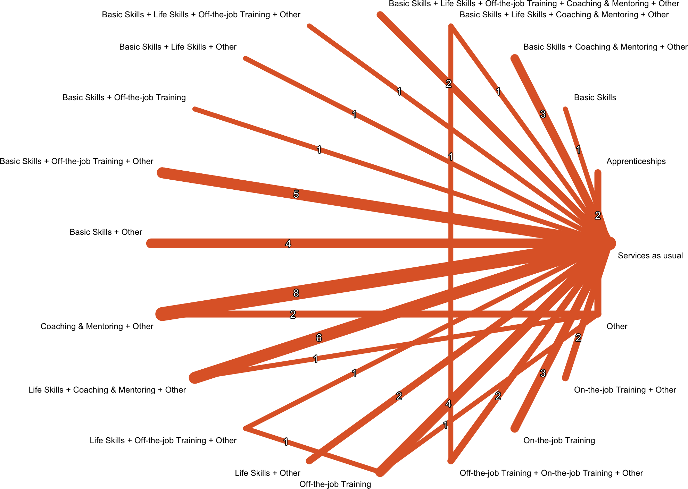
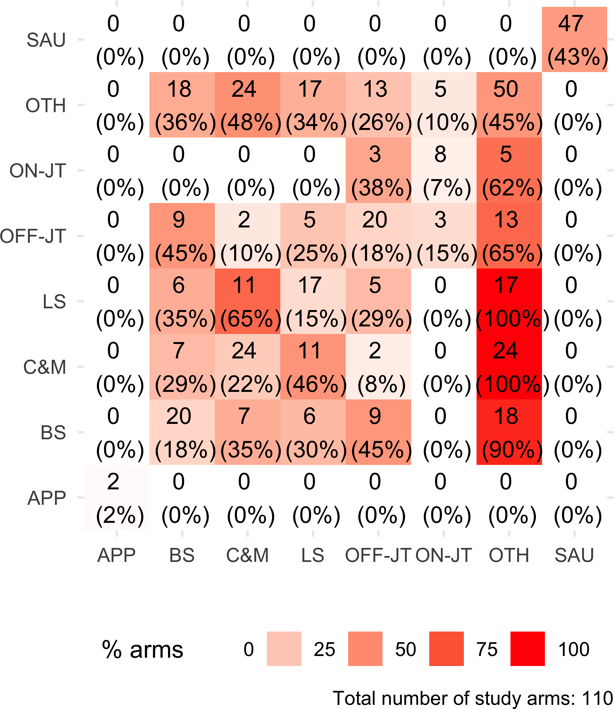
Plot Legend:
BS: Basic Skills, LS: Life Skills, OFF-JT: Off-the-job training, ON-JT: On-the-job-training, APP: Apprenticeships, C&M: Coaching and mentoring, OTH: Other (residual) component.
5.1.3 Summary results in league table
| APP | . | . | . | . | . | . | . | . | . | . | . | . | . | . | . | . | . | 0.18 [-0.07; 0.43] |
. |
| 0.22 [-0.27; 0.70] |
BS | . | . | . | . | . | . | . | . | . | . | . | . | . | . | . | . | . | 0.04 [-0.32; 0.39] |
| 0.19 [-0.21; 0.59] |
-0.03 [-0.45; 0.40] |
BS+C&M+ OTH |
. | . | . | . | . | . | . | . | . | . | . | . | . | . | . | . | 0.06 [-0.17; 0.29] |
| 0.12 [-0.35; 0.58] |
-0.10 [-0.58; 0.38] |
-0.07 [-0.47; 0.33] |
BS+LS+ C&M+OTH |
. | . | . | . | . | . | . | . | . | . | . | 0.10 [-0.64; 0.84] |
. | . | . | 0.12 [-0.24; 0.48] |
| 0.22 [-0.25; 0.68] |
0.00 [-0.48; 0.48] |
0.03 [-0.37; 0.43] |
0.10 [-0.36; 0.56] |
BS+LS+ OFF-JT+C&M+OTH |
. | . | . | . | . | . | . | . | . | . | . | . | . | . | 0.03 [-0.29; 0.36] |
| 0.04 [-0.46; 0.54] |
-0.17 [-0.69; 0.34] |
-0.15 [-0.59; 0.29] |
-0.07 [-0.57; 0.42] |
-0.17 [-0.67; 0.32] |
BS+LS+ OFF-JT+OTH |
. | . | . | . | . | . | . | . | . | . | . | . | . | 0.21 [-0.17; 0.58] |
| 0.17 [-0.33; 0.66] |
-0.05 [-0.56; 0.46] |
-0.02 [-0.46; 0.41] |
0.05 [-0.44; 0.54] |
-0.05 [-0.54; 0.44] |
0.12 [-0.40; 0.65] |
BS+LS+ OTH |
. | . | . | . | . | . | . | . | . | . | . | . | 0.08 [-0.28; 0.45] |
| 0.24 [-0.24; 0.72] |
0.02 [-0.47; 0.52] |
0.05 [-0.37; 0.47] |
0.12 [-0.36; 0.61] |
0.02 [-0.46; 0.50] |
0.20 [-0.32; 0.71] |
0.07 [-0.44; 0.58] |
BS+ OFF-JT |
. | . | . | . | . | . | . | . | . | . | . | 0.01 [-0.34; 0.36] |
| -0.05 [-0.43; 0.33] |
-0.26 [-0.66; 0.13] |
-0.24 [-0.53; 0.05] |
-0.17 [-0.54; 0.21] |
-0.27 [-0.64; 0.11] |
-0.09 [-0.51; 0.32] |
-0.22 [-0.63; 0.19] |
-0.29 [-0.68; 0.11] |
BS+ OFF-JT+OTH |
. | . | . | . | . | . | . | . | . | . | 0.30 [ 0.12; 0.48] |
| 0.22 [-0.15; 0.60] |
0.01 [-0.39; 0.41] |
0.03 [-0.26; 0.33] |
0.11 [-0.27; 0.48] |
0.01 [-0.37; 0.38] |
0.18 [-0.24; 0.60] |
0.06 [-0.35; 0.47] |
-0.02 [-0.41; 0.38] |
0.27 [ 0.02; 0.53] |
BS+ OTH |
. | . | . | . | . | . | . | . | . | 0.03 [-0.15; 0.21] |
| 0.16 [-0.16; 0.49] |
-0.05 [-0.43; 0.33] |
-0.03 [-0.29; 0.24] |
0.05 [-0.30; 0.40] |
-0.05 [-0.40; 0.30] |
0.12 [-0.27; 0.52] |
-0.00 [-0.39; 0.39] |
-0.08 [-0.45; 0.30] |
0.21 [-0.01; 0.43] |
-0.06 [-0.28; 0.16] |
C&M+ OTH |
. | . | . | . | . | . | . | 0.02 [-0.23; 0.27] |
0.08 [-0.05; 0.22] |
| 0.01 [-0.34; 0.37] |
-0.20 [-0.59; 0.18] |
-0.18 [-0.46; 0.10] |
-0.11 [-0.47; 0.26] |
-0.21 [-0.57; 0.15] |
-0.03 [-0.44; 0.37] |
-0.16 [-0.55; 0.24] |
-0.23 [-0.61; 0.16] |
0.06 [-0.18; 0.30] |
-0.21 [-0.45; 0.03] |
-0.15 [-0.35; 0.04] |
LS+C&M+ OTH |
. | . | . | . | . | . | -0.02 [-0.56; 0.51] |
0.26 [ 0.10; 0.42] |
| 0.10 [-0.37; 0.56] |
-0.12 [-0.61; 0.37] |
-0.09 [-0.50; 0.31] |
-0.02 [-0.49; 0.45] |
-0.12 [-0.59; 0.35] |
0.05 [-0.45; 0.56] |
-0.07 [-0.57; 0.43] |
-0.14 [-0.63; 0.34] |
0.14 [-0.24; 0.53] |
-0.13 [-0.51; 0.25] |
-0.07 [-0.43; 0.29] |
0.08 [-0.29; 0.45] |
LS+ OFF-JT+OTH |
. | 0.80 [ 0.09; 1.51] |
. | . | . | . | -0.09 [-0.47; 0.29] |
| 0.23 [-0.20; 0.66] |
0.02 [-0.43; 0.46] |
0.04 [-0.31; 0.40] |
0.12 [-0.31; 0.54] |
0.01 [-0.41; 0.44] |
0.19 [-0.27; 0.65] |
0.06 [-0.39; 0.52] |
-0.01 [-0.45; 0.44] |
0.28 [-0.05; 0.61] |
0.01 [-0.32; 0.34] |
0.07 [-0.23; 0.37] |
0.22 [-0.09; 0.53] |
0.14 [-0.30; 0.57] |
LS+ OTH |
. | . | . | . | . | 0.02 [-0.25; 0.29] |
| 0.02 [-0.33; 0.36] |
-0.20 [-0.59; 0.19] |
-0.17 [-0.46; 0.11] |
-0.10 [-0.47; 0.27] |
-0.20 [-0.57; 0.17] |
-0.02 [-0.44; 0.39] |
-0.15 [-0.55; 0.26] |
-0.22 [-0.61; 0.17] |
0.07 [-0.18; 0.31] |
-0.20 [-0.45; 0.04] |
-0.15 [-0.35; 0.06] |
0.01 [-0.22; 0.23] |
-0.08 [-0.44; 0.28] |
-0.21 [-0.53; 0.11] |
OFF-JT | . | . | . | 0.24 [-0.13; 0.61] |
0.27 [ 0.09; 0.46] |
| 0.15 [-0.26; 0.56] |
-0.06 [-0.50; 0.37] |
-0.04 [-0.38; 0.30] |
0.03 [-0.35; 0.42] |
-0.07 [-0.48; 0.34] |
0.11 [-0.34; 0.56] |
-0.02 [-0.46; 0.43] |
-0.09 [-0.52; 0.34] |
0.20 [-0.11; 0.51] |
-0.07 [-0.38; 0.24] |
-0.01 [-0.29; 0.27] |
0.14 [-0.15; 0.43] |
0.06 [-0.36; 0.47] |
-0.08 [-0.45; 0.29] |
0.13 [-0.17; 0.43] |
OFF-JT+ ON-JT+OTH |
. | . | . | 0.11 [-0.15; 0.37] |
| -0.00 [-0.39; 0.39] |
-0.22 [-0.63; 0.20] |
-0.19 [-0.50; 0.12] |
-0.12 [-0.51; 0.27] |
-0.22 [-0.61; 0.17] |
-0.04 [-0.48; 0.39] |
-0.17 [-0.59; 0.26] |
-0.24 [-0.65; 0.17] |
0.05 [-0.23; 0.33] |
-0.22 [-0.50; 0.05] |
-0.17 [-0.41; 0.08] |
-0.01 [-0.28; 0.25] |
-0.10 [-0.49; 0.30] |
-0.23 [-0.58; 0.11] |
-0.02 [-0.29; 0.25] |
-0.15 [-0.48; 0.17] |
ON-JT | . | . | 0.25 [ 0.04; 0.46] |
| -0.23 [-0.72; 0.27] |
-0.44 [-0.95; 0.07] |
-0.42 [-0.85; 0.02] |
-0.34 [-0.83; 0.15] |
-0.44 [-0.93; 0.05] |
-0.27 [-0.79; 0.26] |
-0.39 [-0.91; 0.13] |
-0.47 [-0.97; 0.04] |
-0.18 [-0.58; 0.23] |
-0.45 [-0.86;-0.04] |
-0.39 [-0.78; 0.00] |
-0.24 [-0.63; 0.16] |
-0.32 [-0.82; 0.18] |
-0.46 [-0.91; 0.00] |
-0.24 [-0.65; 0.16] |
-0.38 [-0.82; 0.07] |
-0.22 [-0.65; 0.20] |
ON-JT+ OTH |
. | 0.48 [ 0.11; 0.84] |
| 0.18 [-0.07; 0.43] |
-0.03 [-0.45; 0.38] |
-0.01 [-0.32; 0.31] |
0.06 [-0.33; 0.46] |
-0.04 [-0.43; 0.35] |
0.14 [-0.29; 0.57] |
0.01 [-0.41; 0.44] |
-0.06 [-0.47; 0.35] |
0.23 [-0.05; 0.51] |
-0.04 [-0.33; 0.24] |
0.02 [-0.19; 0.22] |
0.17 [-0.08; 0.42] |
0.09 [-0.31; 0.48] |
-0.05 [-0.40; 0.30] |
0.16 [-0.08; 0.40] |
0.03 [-0.30; 0.36] |
0.18 [-0.12; 0.49] |
0.41 [-0.02; 0.83] |
OTH | . |
| 0.25 [-0.08; 0.58] |
0.04 [-0.32; 0.39] |
0.06 [-0.17; 0.29] |
0.13 [-0.19; 0.46] |
0.03 [-0.29; 0.36] |
0.21 [-0.17; 0.58] |
0.08 [-0.28; 0.45] |
0.01 [-0.34; 0.36] |
0.30 [ 0.12; 0.48] |
0.03 [-0.15; 0.21] |
0.09 [-0.04; 0.21] |
0.24 [ 0.08; 0.39] |
0.16 [-0.18; 0.49] |
0.02 [-0.25; 0.29] |
0.23 [ 0.06; 0.40] |
0.10 [-0.15; 0.35] |
0.25 [ 0.04; 0.46] |
0.48 [ 0.11; 0.84] |
0.07 [-0.15; 0.29] |
SAU |
Notes:
Effect sizes (Hedge’s g) are reported with 95% confidence intervals.
Combinations of components (listed in alphabetical order) from included studies are shown in orange.
Direct evidence (i.e., sourced from pairwise comparisons) are shown in blue.
Indirect effects (i.e., from the NMA) are shown in gray.
Legend:
BS: Basic Skills, LS: Life Skills, OFF-JT: Off-the-job training, ON-JT: On-the-job-training, APP: Apprenticeships, C&M: Coaching and mentoring, OTH: Other (residual) component.
5.1.4 Fit additive component NMA
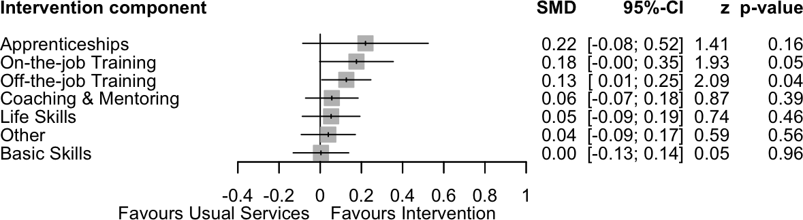
5.1.5 Fit interactive component NMAs
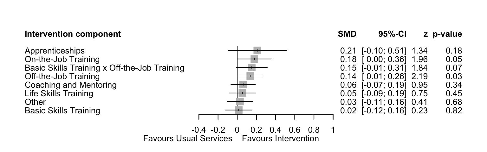
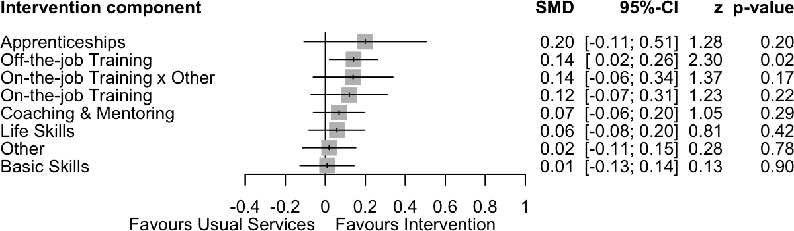
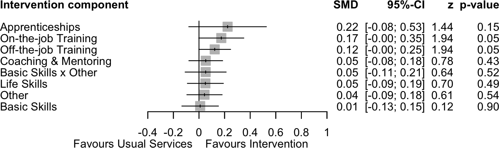
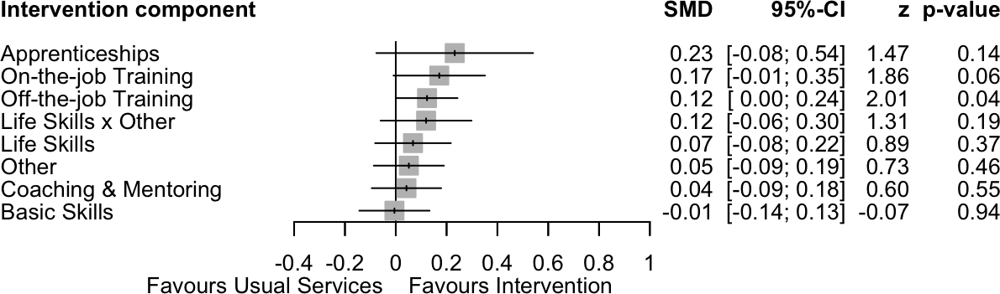
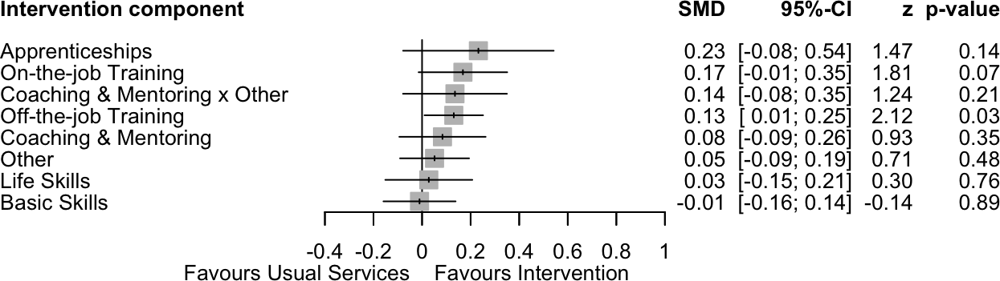
5.1.6 Compare different NMA specifications
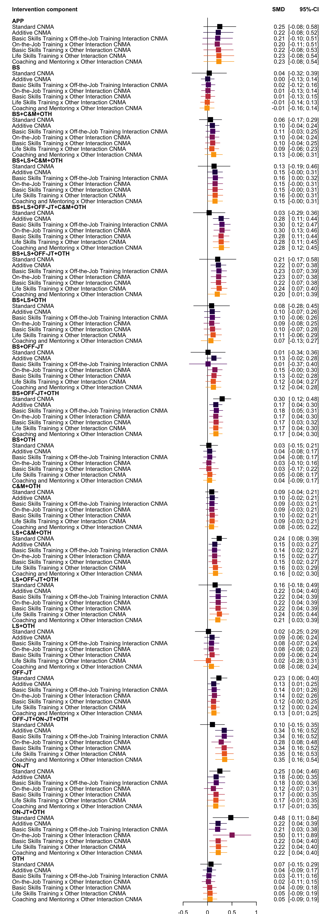
5.1.7 Assess publication bias
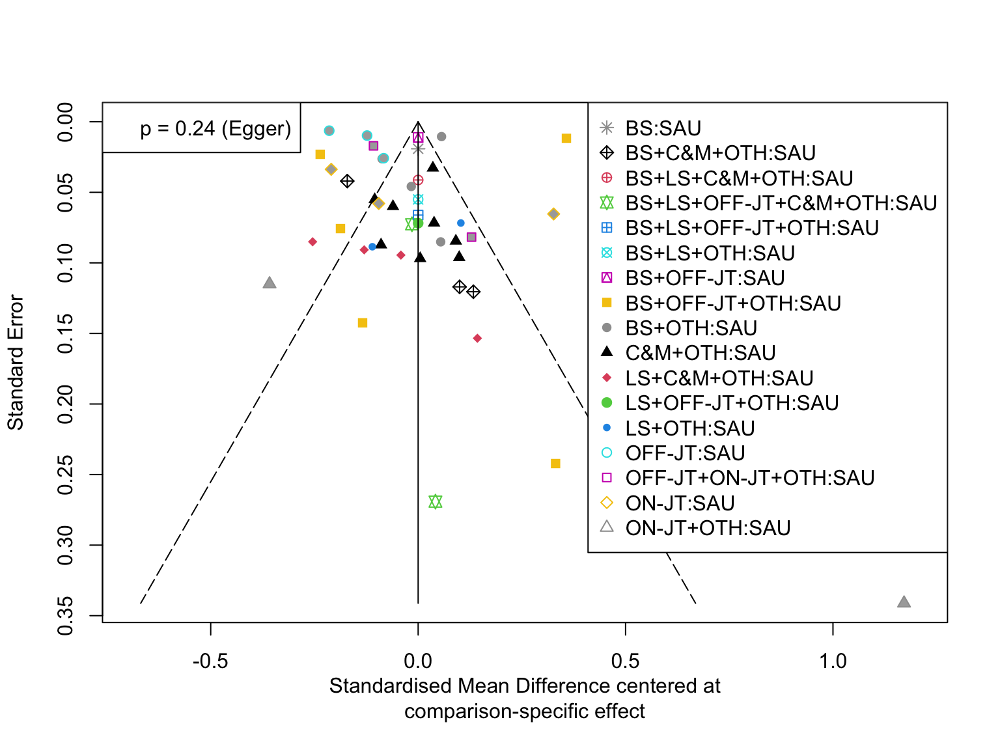
Plot Legend:
APP: Apprenticeships, BS: Basic Skills, LS: Life Skills, OFF-JT: Off-the-job training, ON-JT: On-the-job-training, C&M: Coaching and mentoring, OTH: Other (residual) component.
5.1.8 Evaluate incoherence
5.1.8.1 Assessing local incoherence
Application of the SIDE method to the review team’s preferred specification for employment status — visualised in Figure 12 — allows for the exploration of inconsistency within each combination of components where mixed evidence is present.
The analysis established that there are 190 possible combinations of components in this specification. Of those combinations, twelve (n=12) solely use direct evidence. Another eleven (n=11) use mixed evidence i.e., a combination of direct and indirect evidence.
Note that the number of studies for each combination of components using mixed evidence is very small — there are only five combinations of components that use two or more studies — as a result, care needs to be taken into drawing conclusions from any observed inconsistency.
Application of the SIDE method identified a moderate amount of overall heterogeneity (\(\tau\) = 0.180). Inconsistency between indirect and direct evidence was assessed using I2. Inconsistency appears to be present in three combinations, as indicated by an I2 value of 80 or more:
Life Skills + Coaching & Mentoring + Other versus Services as Usual (I2: 98%)
Off-the-job Training versus Services as Usual (I2: 97%)
Off-the-job Training + On-the-job Training + Other versus Services as Usual (I2: 88%)
In interpreting these results its important to note that I2 is a relative — as opposed to absolute — measure of heterogeneity Borenstein, Higgins, Hedges, & Rothstein (2017). Therefore taken together, these results suggest that of the moderate amount of heterogeneity that was identified, most it is true heterogeneity.
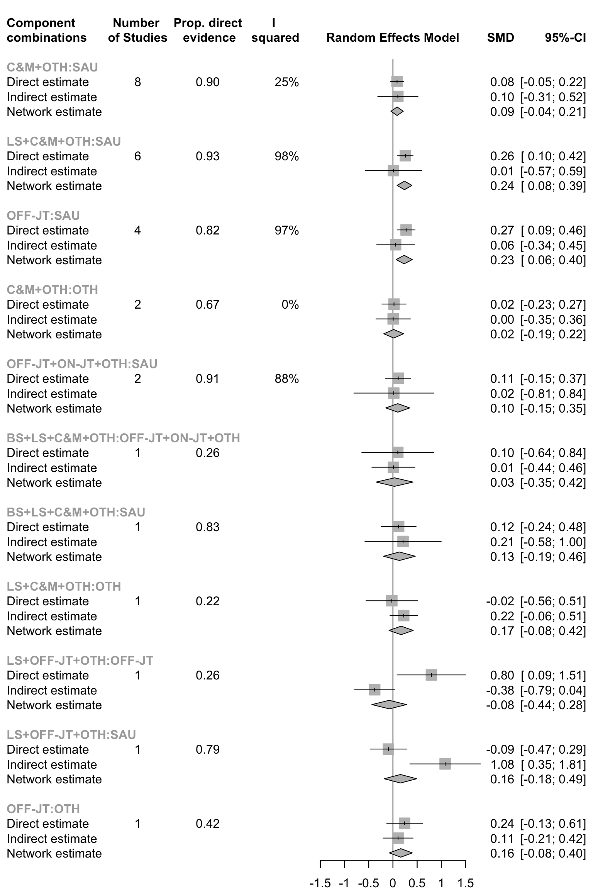
5.1.8.2 Assessing global incoherence
The ‘between designs’ decomposition of Cochran’s Q for employment status is presented in Table 13 below. The results suggest that the level of heterogeneity within the included designs (i.e., combinations of components) is not significant. However, caution should be taken in the interpretation of these results as the number of included studies with mixed evidence is low.
| Specification | Q | df | p-value | Square-root of between study variance |
|---|---|---|---|---|
| Between designs | 8.373 | 4 | 0.079 | 0.18 |
5.1.9 Subgroup analysis
5.1.9.1 Study confidence
Among studies that reported employment status outcomes, sixteen (n=16) were assessed as ‘high confidence’, and forty-five (n=45) were ‘low’ or ‘medium confidence’.
Figure 13 presents this analysis. There were no significant differences between the two groups. While off-the-job training for low to medium confidence studies appears significant, this is most likely to be the result of a reduction in statistical power due to the relatively small number of studies considered ‘high confidence’.
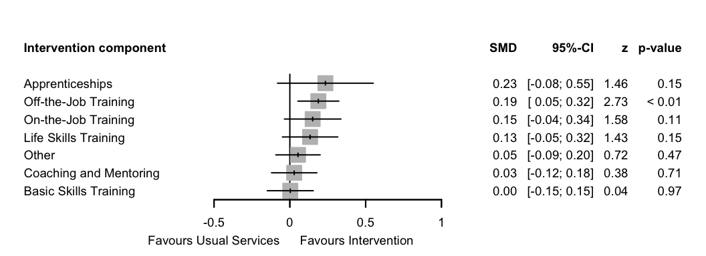
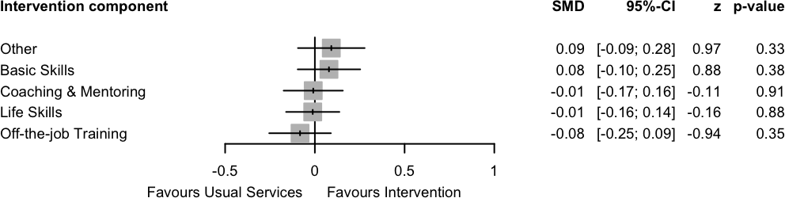
5.1.9.2 Study location
Of the fifty-five (n=55) included studies that report employment status outcomes, thirty-six (n=36) were conducted in the United States, with the remaining nineteen (n=19) conducted elsewhere.
The results — presented in Figure 14 below — indicate that apprenticeships have a small but significant impact on employment, however they have only been evaluated in the United States. Therefore, it is unclear whether these findings are generalisable to other countries.
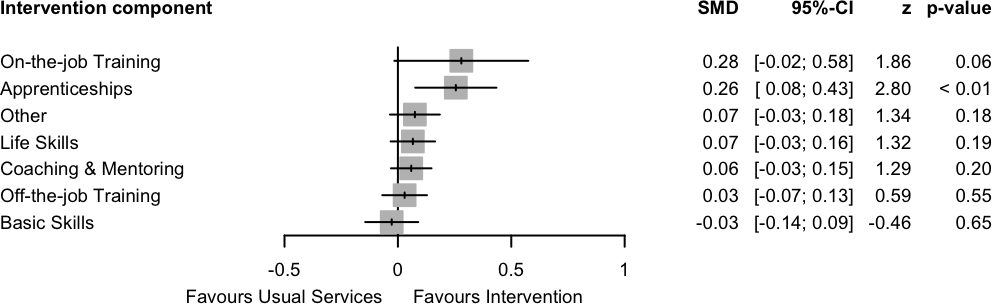
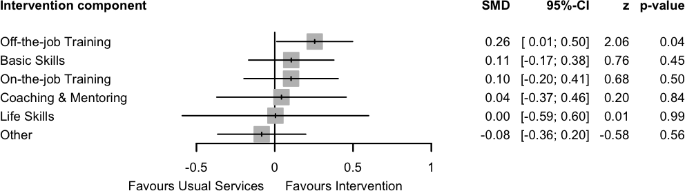
5.1.9.3 Study population
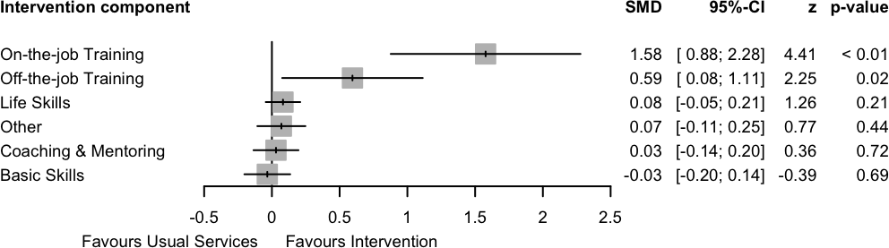
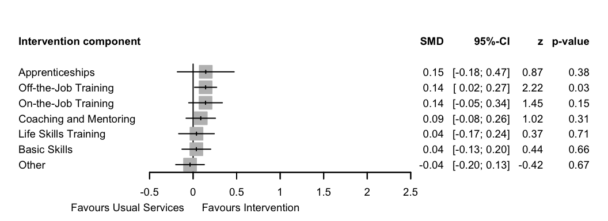
5.1.10 Sensitivity analysis
Thirty (n=30) of the fifty-five (n=55) included studies that report employment status outcomes used randomised study designs, while the remaining twenty-five (n=25) used non-randomised designs.
The results of this analysis — presented below in Figure 16 — suggest that the observed overall positive effect of off-the-job training in the additive CNMA may be driven by the larger observed effect sizes in non-randomised studies. The absence of a statistically significant positive effect among randomised studies may be a result of a lack of statistical power — there are fewer randomised than non-randomised studies — it may also reflect a more accurate estimate of effect (i.e., the true effect is that off-the-job training has no impact on employment status) from studies that use designs which generally provide a higher level of confidence.
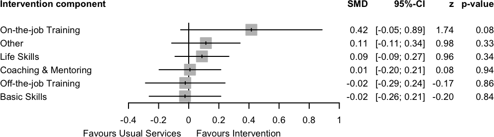
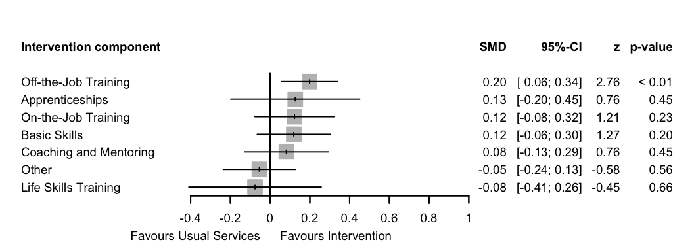
5.2 Education completion
5.2.1 Fit standard NMA
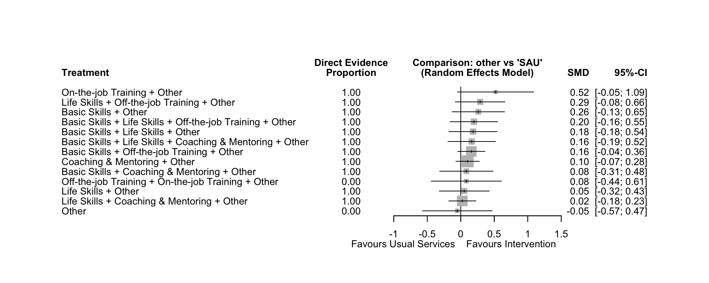
5.2.2 Visualise the network structure
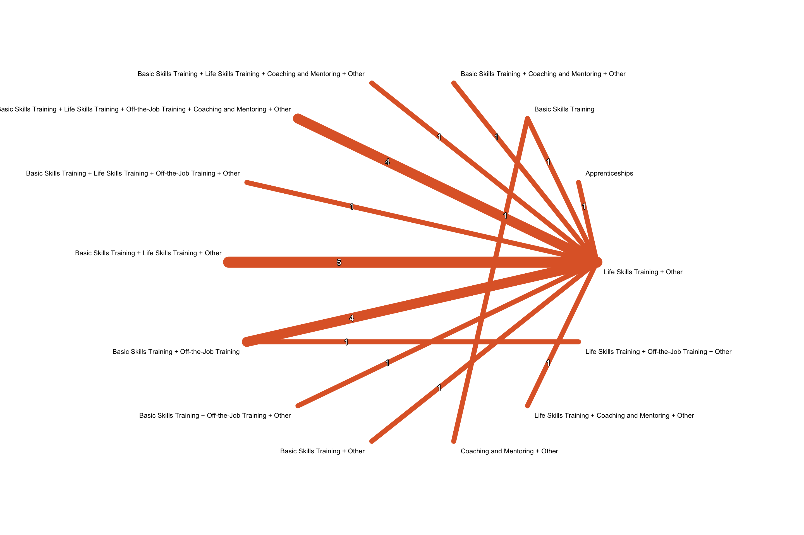
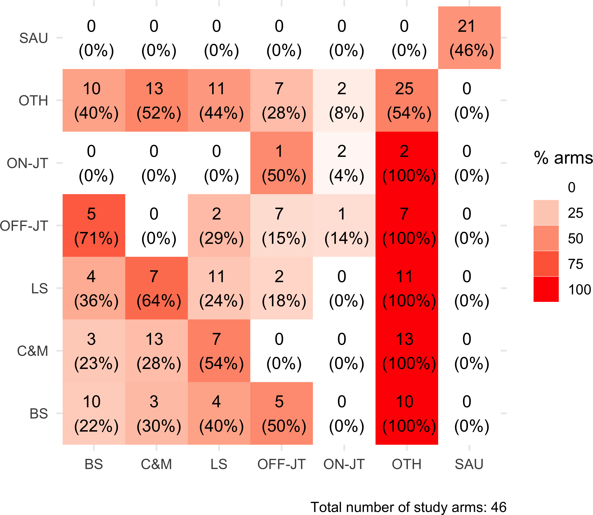
Plot Legend:
BS: Basic Skills, LS: Life Skills, OFF-JT: Off-the-job training, ON-JT: On-the-job-training, C&M: Coaching and mentoring, OTH: Other (residual) component.
5.2.3 Summary results in league table
| BS+C&M+ OTH |
. | . | . | . | . | . | . | . | . | . | . | . | 0.08 [-0.31;0.48] |
| -0.08 [-0.61;0.45] |
BS+LS+ C&M+OTH |
. | . | . | . | . | . | . | . | 0.08 [-0.31;0.47] |
. | . | 0.16 [-0.19;0.52] |
| -0.11 [-0.65;0.42] |
-0.03 [-0.53;0.47] |
BS+LS+ OFF-JT+OTH |
. | . | . | . | . | . | . | . | . | . | 0.20 [-0.16;0.55] |
| -0.10 [-0.64;0.44] |
-0.02 [-0.52;0.48] |
0.01 [-0.49;0.52] |
BS+LS+ OTH |
. | . | . | . | . | . | . | . | . | 0.18 [-0.18;0.54] |
| -0.07 [-0.52;0.37] |
0.01 [-0.40;0.41] |
0.04 [-0.37;0.45] |
0.03 [-0.39;0.44] |
BS+ OFF-JT+OTH |
. | . | . | . | . | . | . | . | 0.16 [-0.04;0.36] |
| -0.18 [-0.74;0.38] |
-0.10 [-0.63;0.43] |
-0.06 [-0.59;0.46] |
-0.08 [-0.61;0.45] |
-0.10 [-0.54;0.34] |
BS+ OTH |
. | . | . | . | . | . | . | 0.26 [-0.13;0.65] |
| -0.02 [-0.45;0.42] |
0.06 [-0.33;0.46] |
0.09 [-0.30;0.49] |
0.08 [-0.32;0.48] |
0.06 [-0.21;0.32] |
0.16 [-0.27;0.59] |
C&M+ OTH |
. | . | . | . | . | . | 0.10 [-0.07;0.28] |
| 0.06 [-0.39;0.51] |
0.14 [-0.27;0.55] |
0.17 [-0.23;0.58] |
0.16 [-0.25;0.57] |
0.13 [-0.15;0.42] |
0.24 [-0.20;0.68] |
0.08 [-0.19;0.35] |
LS+C&M+ OTH |
. | . | . | . | 0.07 [-0.40;0.55] |
0.02 [-0.18;0.23] |
| -0.21 [-0.75;0.34] |
-0.13 [-0.64;0.39] |
-0.09 [-0.61;0.42] |
-0.11 [-0.62;0.41] |
-0.13 [-0.55;0.29] |
-0.03 [-0.57;0.51] |
-0.19 [-0.60;0.22] |
-0.27 [-0.69;0.16] |
LS+ OFF-JT+OTH |
. | . | . | . | 0.29 [-0.08;0.66] |
| 0.03 [-0.51;0.58] |
0.11 [-0.40;0.63] |
0.15 [-0.37;0.66] |
0.13 [-0.39;0.65] |
0.11 [-0.32;0.53] |
0.21 [-0.33;0.75] |
0.05 [-0.36;0.46] |
-0.03 [-0.45;0.40] |
0.24 [-0.29;0.76] |
LS+ OTH |
. | . | . | 0.05 [-0.32;0.43] |
| 0.00 [-0.66;0.66] |
0.08 [-0.31;0.47] |
0.11 [-0.52;0.75] |
0.10 [-0.53;0.74] |
0.07 [-0.49;0.64] |
0.18 [-0.48;0.83] |
0.02 [-0.53;0.57] |
-0.06 [-0.62;0.50] |
0.21 [-0.44;0.85] |
-0.03 [-0.67;0.61] |
OFF-JT+ ON-JT+OTH |
. | . | . |
| -0.44 [-1.13;0.26] |
-0.36 [-1.03;0.31] |
-0.32 [-0.99;0.35] |
-0.34 [-1.01;0.34] |
-0.36 [-0.97;0.24] |
-0.26 [-0.95;0.43] |
-0.42 [-1.01;0.18] |
-0.50 [-1.10;0.11] |
-0.23 [-0.91;0.45] |
-0.47 [-1.15;0.21] |
-0.44 [-1.21;0.34] |
ON-JT+ OTH |
. | 0.52 [-0.05;1.09] |
| 0.13 [-0.52;0.79] |
0.21 [-0.41;0.84] |
0.25 [-0.38;0.88] |
0.24 [-0.40;0.87] |
0.21 [-0.35;0.77] |
0.31 [-0.34;0.96] |
0.15 [-0.39;0.70] |
0.07 [-0.40;0.55] |
0.34 [-0.30;0.98] |
0.10 [-0.54;0.74] |
0.13 [-0.60;0.87] |
0.57 [-0.20;1.34] |
OTH | . |
| 0.08 [-0.31;0.48] |
0.16 [-0.19;0.52] |
0.20 [-0.16;0.55] |
0.18 [-0.18;0.54] |
0.16 [-0.04;0.36] |
0.26 [-0.13;0.65] |
0.10 [-0.07;0.28] |
0.02 [-0.18;0.23] |
0.29 [-0.08;0.66] |
0.05 [-0.32;0.43] |
0.08 [-0.44;0.61] |
0.52 [-0.05;1.09] |
-0.05 [-0.57;0.47] |
SAU |
Notes:
Effect sizes (Hedge’s g) are reported with 95% confidence intervals.
Combinations of components (listed in alphabetical order) from included studies are shown in orange.
Direct evidence (i.e., sourced from pairwise comparisons) are shown in blue.
Indirect effects (i.e., from the NMA) are shown in gray.
Legend:
BS: Basic Skills, LS: Life Skills, OFF-JT: Off-the-job training, ON-JT: On-the-job-training, C&M: Coaching and mentoring, OTH: Other (residual) component.
5.2.4 Fit additive component NMA
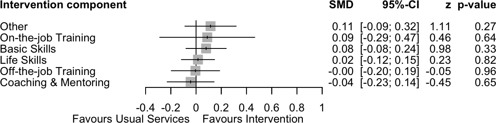
5.2.5 Fit interactive component NMAs
For education completion, the review team identified four potential pairs of components that could be combined in an interaction. They were:
On-the-job training x Other
Basic Skills x Other
Life Skills x Other
Coaching & Mentoring x Other
As with employment status, there were no significant differences in the impact of the components individually or interacting in any of these models — these results are presented in the forest plots below.
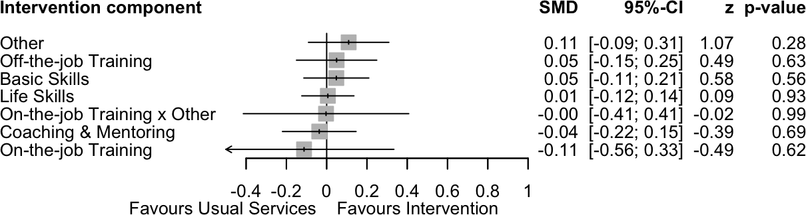
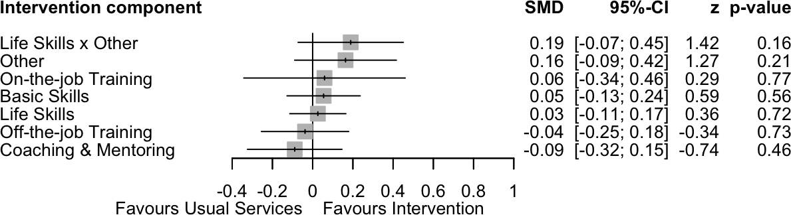
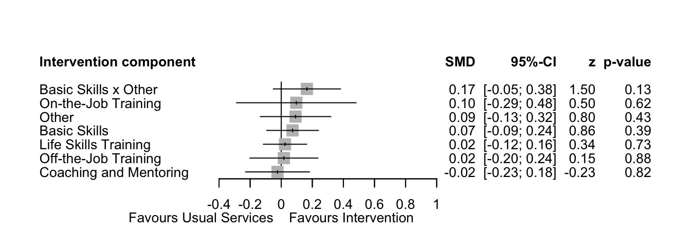
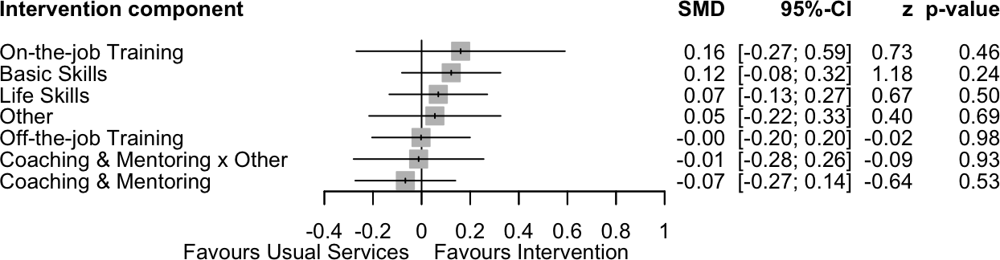
5.2.6 Compare different NMA specifications
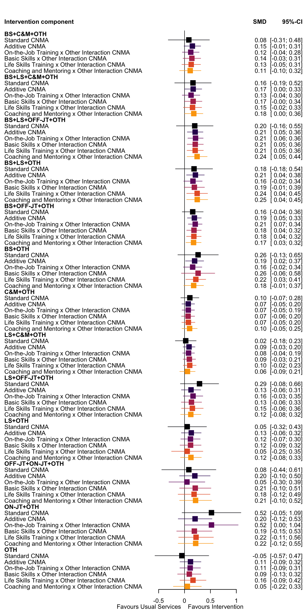
5.2.7 Assess publication bias
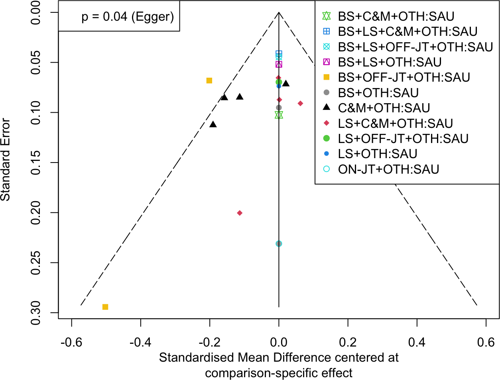
Plot Legend:
BS: Basic Skills, LS: Life Skills, OFF-JT: Off-the-job training, ON-JT: On-the-job-training, C&M: Coaching and mentoring, OTH: Other (residual) component.
5.2.8 Evaluate incoherence
5.2.8.1 Assessing local incoherence
It was not possible to apply the SIDE methodology to the network of studies reporting education completion outcomes due to the absence of any indirect evidence within that network.
5.2.8.2 Assessing global incoherence
It was not possible to assess global incoherence for the network of included studies reporting education outcomes due to the absence of any indirect evidence within that network.
5.2.9 Subgroup analysis
5.2.9.1 Study confidence
Of the twenty-three (n=23) included studies reporting education completion outcomes, nine (n=9) were assessed as ‘high confidence’, and fourteen (n=14) were ‘low or medium confidence’. In this case, there were insufficient studies to undertake a subgroup analysis.
5.2.9.2 Study population
Thirteen (n=13) of the included studies reporting education completion outcomes served populations who reported facing additional barriers, while the remaining ten (n=10) served populations who did not report facing additional barriers. In this case, there were insufficient studies to undertake a subgroup analysis by study population.
The results — depicted in Figure 27 — show that there are no significant differences in education completion outcomes by study population. Additionally, there are no significant differences in outcomes between populations. The wide confidence intervals depicted in the forest plots indicate both that the sample is underpowered and that our estimates are uncertain.
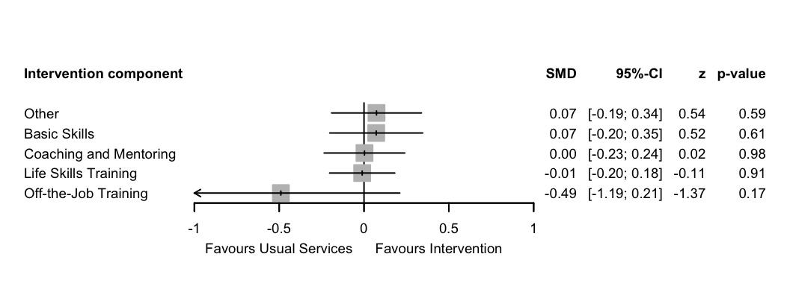
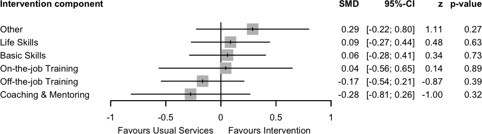
5.2.9.3 Study location
Of the twenty-three (n=23) included studies reporting education completion outcomes, twenty-two (n=22) were from the United States, which did not allow for subgroup analysis by study location.
5.2.10 Sensitivity analysis
Of the twenty-three (n=23) studies reporting education completion outcomes, all but three (n=20) use randomised designs. This meant that it was not possible to undertake sensitivity analysis by study design for this outcome.
References
Alegre, M. À., Casado, D., Sanz, J., & Todeschini, F. A. (2015). The impact of training-intensive labour market policies on labour and educational prospects of NEETs: Evidence from Catalonia (Spain). Educational Research, 57(2), 151–167. https://doi.org/10.1080/00131881.2015.1030852
Bampasidou, M. (2012). Unbundling the degree effect in a job training program for disadvantaged youths (PhD thesis, University of Miami). University of Miami, Miami, FL. Retrieved from https://ufdc.ufl.edu/UFE0044581/00001/pdf
Bampasidou, M., Flores, C. A., Flores-Lagunes, A., & Parisian, D. J. (2014). The role of degree attainment in the differential impact of job corps on adolescents and young adults. Research in Labor Economics, 40, 113–156. https://doi.org/10.1108/S0147-912120140000040004
Bauer, E. L., Crosse, S., McPherson, K., Friedman, J., Zacharia, Z., Tapper, D., & Clarke, R. (2014). Evaluation of the New York City Justice Corps: Final Outcome Report (p. 179). New York NY: WeStat and Prisoner Reentry Institute, John Jay College of Criminal Justice. Retrieved from WeStat and Prisoner Reentry Institute, John Jay College of Criminal Justice website: https://www1.nyc.gov/assets/opportunity/pdf/Westat-Justice-Corps-Evaulation.pdf
Blanco, G., Flores, C. A., & Flores-Lagunes, A. (2013a). Bounds on average and quantile treatment effects of job corps training on wages. Journal of Human Resources, 48(3), 659–701. https://doi.org/10.3368/jhr.48.3.659
Blanco, G., Flores, C. A., & Flores-Lagunes, A. (2013b). The Effects of Job Corps Training on Wages of Adolescents and Young Adults. American Economic Review: Papers & Proceedings, 103(3), 418–422. https://doi.org/10.1257/aer.103.3.418
Blanco, G., & Flores-Lagunes, A. (2017). Does Youth Training Lead to Better Job Quality? Evidence from Job Corps. 13th IZA Conference: Labor Market Policy Evaluation, 45. Bonn.
Bloom, H. S., Orr, L. L., Bell, S. H., Cave, G., Doolittle, F., Lin, W., … Doolittle, F. (1997). The Benefits and Costs of JTPA Title II-A Programs: Key Findings from the National Job Training Partnership Act Study. The Journal of Human Resources, 32(3), 549–576. Retrieved from https://www.jstor.org/stable/146183?origin=crossref
Bloom, H. S., Orr, L. L., Cave, G., Bell, S. H., & Doolittle, F. (1993). The National JTPA Study: Title II-A Impacts on Earnings and Employment at 18 Months (p. 458). Bethesda, MD: Abt Associates.
Blundell, R., Dias, M. C., Meghir, C., & van Reenen, J. (2004). Evaluating the Employment Impact of a Mandatory Job Search Program. Journal of the European Economic Association, 2(4), 569–606. https://doi.org/10.1162/1542476041423368
Borenstein, M., Higgins, J. P. T., Hedges, L. V., & Rothstein, H. R. (2017). Basics of meta-analysis: I 2 is not an absolute measure of heterogeneity: I 2 is not an absolute measure of heterogeneity. Research Synthesis Methods, 8(1), 5–18. https://doi.org/10.1002/jrsm.1230
Brunetti, I., & Corsini, L. (2017). Workplace training programs: Instruments for human capital improvements or screening devices? Education + Training, 59(1), 31–46. https://doi.org/10.1108/ET-09-2014-0104
Caliendo, M., Künn, S., & Schmidl, R. (2011). Fighting Youth Unemployment: The Effects of Active Labor Market Policies. Bonn: IZA. https://doi.org/10.2139/ssrn.1977808
Cave, G., Bos, H., Doolittle, F., & Toussaint, C. (1993). JOBSTART: Final Report on a Program for School Dropouts. New York NY: Manpower Demonstration Research Corporation. Retrieved from Manpower Demonstration Research Corporation website: https://www.ojp.gov/ncjrs/virtual-library/abstracts/jobstart-final-report-program-school-dropouts#:~:text=This document is the final report on the,the employment and earning prospects for school dropouts.
Centeno, L., Centeno, M., & Novo, A. A. (2008). Evaluating Job Search Programs for Old and Young Individuals: Heterogeneous Impact on Unemployment duration. Estudos e {{Documentos}} de {{Trabalho}}, Banco de Portugal Eurosistema, Lisbon.
Centeno, M., & Novo, A. A. (2006). Avaliação Do Impacto De Um Programa De Apoio À Procura De Emprego. Boletim Económico Do Banco de Portugal, (Verão), 85–96.
Chen, X. (2013). Partial Identification of Average Treatment Effects in Program Evaluation: Theory and Applications (PhD thesis, University of Miami). University of Miami, Miami, FL. Retrieved from http://search.ebscohost.com/login.aspx?direct=true&db=ecn&AN=1471063&site=ehost-live
Chen, X., Flores, C. A., & Flores-Lagunes, A. (2018). Going beyond LATE: Bounding Average Treatment Effects of Job Corps Training. Journal of Human Resources, 53(4), 1050–1099. https://doi.org/10.3368/jhr.53.4.1015.7483R1
Courtney, M. E., Valentine, E. J., & Skemer, M. (2019). Experimental evaluation of transitional living services for system-involved youth: Implications for policy and practice. Children and Youth Services Review, 96(June 2018), 396–408. https://doi.org/10.1016/j.childyouth.2018.11.031
Courtney, M. E., Zinn, A., Johnson, H., & Malm, K. E. (2011). Evaluation of the Massachusetts Adolescent Outreach Program for Youths in Intensive Foster Care: Final Report. Washington DC: Office of Planning, Research and Evaluation, Administration for Children and Families, U.S. Department of Health and Human Services. Retrieved from Office of Planning, Research and Evaluation, Administration for Children and Families, U.S. Department of Health and Human Services website: https://www.acf.hhs.gov/opre/report/evaluation-massachusetts-adolescent-outreach-program-youths-intensive-foster-care-final
Courtney, M. E., Zinn, A., Koralek, A., & Bess, R. J. (2011). Evaluation of the Independent Living Employment Services Program, Kern County, California: Final Report. Washington DC: Office of Planning, Research and Evaluation, Administration for Children and Families, U.S. Department of Health and Human Services. Retrieved from Office of Planning, Research and Evaluation, Administration for Children and Families, U.S. Department of Health and Human Services website: https://www.acf.hhs.gov/opre/resource/evaluation-of-the-independent-living-employment-services-program-kern
Cummings, D., Farrell, M., & Skemer, M. (2018). Forging a Path: Final Impacts and Costs of New York City’s Young Adult Internship Program (No. OPRE Report 2018-75). Washington DC: OPRE Report 2018-75. Washington, DC: Office of Planning, Research, and Evaluation, Administration for Children and Families, U.S. Department of Health and Human Services.
Davis, J. M. V., & Heller, S. B. (2017). Rethinking the Benefits of Youth Employment Programs: The Heterogeneous Effects of Summer Jobs. Cambridge MA: National Bureau of Economic Research. Retrieved from http://www.nber.org/papers/w23443
De Giorgi, G. (2005). The New Deal for Young People Five Years On. Fiscal Studies, 26(3), 371–383. Retrieved from https://www.jstor.org/stable/24440071
Duarte, N., Geraci, A., Granato, S., Mazzarella, G., & Mortagua, M. J. (2020). The evaluation of the Youth Employment Initiative in Portugal using Counterfactual Impact Evaluation methods. Ispra, Italy: Joint Research Centre. Retrieved from Joint Research Centre website: https://publications.jrc.ec.europa.eu/repository/handle/JRC120942
Ehlert, C. R., Kluve, J., & Schaffner, S. (2012a). Temporary Work as an Active Labor Market Policy: Evaluating an Innovative Activation Program for Disadvantaged Youths. Economics Bulletin, 32(2), 1765–1773. Retrieved from http://hdl.handle.net/10419/125568www.econstor.eu
Ehlert, C. R., Kluve, J., & Schaffner, S. (2012b). Temporary Work as an Active Labor Market Policy: Evaluating an Innovative Program for Disadvantaged Youths. Bonn: Institute for the Study of Labor. https://doi.org/10.2139/ssrn.2096800
Fein, D., & Hamadyk, J. (2018). Bridging the Opportunity Divide for Low-Income Youth: Implementation and Early Impacts of the Year Up Program (No. OPRE Report #2018-65). Washington DC: Office of Planning, Research, and Evaluation, Administration for Children and Families, U.S. Department of Health and Human Services.
Flores-Lagunes, A., Gonzalez, A., & Neumann, T. (2010). Learning but not earning? The impact of job corps training on hispanic youth. Economic Inquiry, 48(3), 651–667. https://doi.org/10.1111/j.1465-7295.2009.00211.x
Fraker, T. M., Baird, P., Black, A., Mamun, A. A., Manno, M., Martinez, J., … Reed, D. (2011). The Social Security Administration’s Youth Transition Demonstration Projects: Interim Report on Colorado Youth Wins. Washington DC: Mathematica Policy Research. Retrieved from Mathematica Policy Research website: https://www.mathematica.org/publications/the-social-security-administrations-youth-transition-demonstration-projects-interim-report-on-colorado-youth-wins
Fraker, T. M., Black, A., Broadus, J., Mamun, A., Manno, M., Martinez, J., … Reed, D. (2011). The Social Security Administration’s Youth Transition Demonstration Projects Interim Report on the City University of New York’s Project. Washington DC: Mathematica Policy Research. Retrieved from Mathematica Policy Research website: https://www.mathematica.org/publications/the-social-security-administrations-youth-transition-demonstration-projects-interim-report-on-the-city-university-of-new-yorks-project
Fraker, T. M., Black, A., Mamun, A., Manno, M., Martinez, J., O’Day, B., … Reed, D. (2011). The Social Security Administration’s Youth Transition Demonstration Projects: Interim Report on Transition WORKS (No. Mathematica Reference Number: 06209.125). Washington DC: Mathematica Policy Research. Retrieved from Mathematica Policy Research website: https://www.mathematica.org/publications/the-social-security-administrations-youth-transition-demonstration-projects-interim-report-on-transition-works
Fraker, T. M., Cobb, J., Hemmeter, J., Luecking, R., & Mamun, A. (2018). Three-Year Effects of the Youth Transition Demonstration Projects. Social Security Bulletin, 78(3), 19–41. Retrieved from https://papers.ssrn.com/abstract=3232045
Fraker, T. M., Crane, K. T., Honeycutt, T. C., Luecking, R. G., Mamun, A. A., & O’Day, B. L. (2018). The youth transition demonstration project in Miami, Florida: Design, implementation, and three-year impacts. Journal of Vocational Rehabilitation, 48(1), 79–91. https://doi.org/10.3233/JVR-170917
Fraker, T. M., Honeycutt, T., Mamun, A., Manno, M., Martinez, J., O’Day, B., … Thompkins, A. (2012). The Social Security Administration’s Youth Transition Demonstration Projects: Interim Report on Broadened Horizons, Brighter Futures (p. 194). Washington DC: Mathematica Policy Research.
Fraker, T. M., Mamun, A., Honeycutt, T., Thompkins, A., & Valentine, E. J. (2014). Final Report on the Youth Transition Demonstration Evaluation (p. 251). Washington DC: Office of Research, Demonstration, and Employment Support, Social Security Administration. Retrieved from Office of Research, Demonstration, and Employment Support, Social Security Administration website: https://www.mdrc.org/sites/default/files/Final_Repot_on_the_Youth_Transition_Demonstration_Evaluation.pdf
Fraker, T. M., Mamun, A., Manno, M., Martinez, J., Reed, D., Thompkins, A., & Wittenburg, D. (2012). The Social Security Administration’s Youth Transition Demonstration Projects: Interim Report on West Virginia Youth Works. Washington DC: Mathematica Policy Research. Retrieved from Mathematica Policy Research website: https://www.mathematica.org/publications/the-social-security-administrations-youth-transition-demonstration-projects-interim-report-on-west-virginia-youth-works
Frumento, P., Mealli, F., Pacini, B., & Rubin, D. B. (2012). Evaluating the effect of training on wages in the presence of noncompliance, nonemployment, and missing outcome data. Journal of the American Statistical Association, 107(498), 450–466. https://doi.org/10.1080/01621459.2011.643719
Geckeler, C., Betesh, H., Diaz, H., Folsom, L., Kim, H., & Paprocki, A. (2017). Helping Dropout Youth Find Education and Employment: Final Impact Report for the Evaluation of the Los Angeles Reconnections Career Academy (LARCA) Program (p. 153). Oakland CA: Social Policy Research Associates. Retrieved from Social Policy Research Associates website: https://strategies.workforcegps.org/resources/2019/12/18/21/05/Impact-Report-for-the-Evaluation-of-the-Los-Angeles-Reconnections-Career-Academy-LARCA-Program
Gritz, R. M., & Johnson, T. (2001). National Job Corps Study: Assessing Program Effects on Earnings for Students Achieving Key Program Milestones. Washington DC: Office of Policy and Research, Employment and Training Administration, U.S. Department of Labor. Retrieved from Office of Policy and Research, Employment and Training Administration, U.S. Department of Labor website: https://wdr.doleta.gov/opr/fulltext/MilestoneImpactReport-Final.pdf
Gupta, S., Srinivasan, M., Chen, Y., Patterson, L., & Griffith, T. (2016). Evaluation of the Linking Innovation, Knowledge, and Employment Program: Final Evaluation Report (p. 113). Colombia MD: IMPAQ International LLC. Retrieved from IMPAQ International LLC website: https://strategies.workforcegps.org/resources/2018/05/19/00/12/Evaluation-of-the-Linking-Innovation-Knowledge-and-Employment-Program-Final-Evaluation-Report
Hämäläinen, K., & Tuomala, J. (2008). Vocational Labour Market Training in Promoting Youth Employment. Helsinki: Government Institute for Economic Research.
Heckman, J. J., Ichimura, H., & Todd, P. E. (1997). Matching As An Econometric Evaluation Estimator: Evidence from Evaluating a Job Training Programme. Review of Economic Studies, 64(4), 605–654. https://doi.org/10.2307/2971733
Heckman, J. J., & Smith, J. A. (1999). The pre-programme earnings dip and the determinants of participation in a social programme. Implications for simple programme evaluation strategies. Economic Journal, 109(457), 313–348. https://doi.org/10.1111/1468-0297.00451
Hollenbeck, K., & Huang, W.-J. (2006). Net Impact Estimates of the Workforce Development System in Washington State. Kalamazoo MI: Upjohn Institute for Employment Research. Retrieved from Upjohn Institute for Employment Research website: https://doi.org/10.17848/tr06-020
Hollenbeck, K., & Huang, W.-J. (2016). Net Impact and Benefit-Cost Estimates of the Workforce Development System in Washington State (No. Upjohn Institute Technical Report 16-033). Kalamazoo MI: W.E. Upjohn Institute. https://doi.org/10.17848/tr16-033
Izzo, M. V., Cartledge, G., Miller, L., Growick, B., & Rutkowshi, S. (2000). Increasing Employment Earnings: Extended Transition Services that Make a Difference. Career Development for Exceptional Individuals, 23(2), 139–156. Retrieved from https://doi.org/10.1177/088572880002300203
Kim, Y., Ju, E., Rosenberg, R., & Farmer, E. M. Z. (2019). Estimating the effects of independent living services on educational attainment and employment of foster care youth. Children and Youth Services Review, 96(August 2018), 294–301. https://doi.org/10.1016/j.childyouth.2018.11.048
Kopečná, V. (2016). Counterfactual Impact Evaluation of the Project Internships for Young Job Seekers. Central European Journal of Public Policy, 10(2), 48–66. https://doi.org/10.1515/cejpp-2016-0026
Kornfeld, R., & Bloom, H. S. (1999). Measuring program impacts on earnings and employment: Do unemployment insurance wage reports from employers agree with surveys of individuals? Journal of Labor Economics, 17(1), 168–197. https://doi.org/10.1086/209917
Lee, D. S. (2009). Training, wages, and sample selection: Estimating sharp bounds on treatment effects. Review of Economic Studies, 76(3), 1071–1102. https://doi.org/10.1111/j.1467-937X.2009.00536.x
Lüdecke, D. (2019). Esc: Effect Size Computation for Meta Analysis. Retrieved from https://CRAN.R-project.org/package=esc
Maibom, J., Rosholm, M., & Svarer, M. (2014). Can Active Labour Market Policies Combat Youth Unemployment? Bonn: Institute of Labor Economics. Retrieved from https://docs.iza.org/dp7912.pdf
McClanahan, W. S., Sipe, C. L., & Smith, T. J. (2004). Enriching Summer Work: An Evaluation of the Summer Career Exploration Program. Philadelphia PA: Public/Private Ventures. Retrieved from Public/Private Ventures website: https://eric.ed.gov/?id=ED503188
Millenky, M., Bloom, D., & Dillon, C. (2010). Making the Transition: Interim Results of the National Guard Youth ChalleNGe Evaluation. New York NY: MDRC. Retrieved from MDRC website: https://www.mdrc.org/sites/default/files/full_434.pdf
Millenky, M., Bloom, D., Muller-Ravett, S., & Broadus, J. (2011). Staying on Course: Three-Year Results of the National Guard Youth ChalleNGe Evaluation. New York NY: MDRC. Retrieved from MDRC website: https://ssrn.com/abstract=2019770
Millenky, M., Schwartz, S. E. O., & Rhodes, J. E. (2014). Supporting the Transition to Adulthood among High School Dropouts: An Impact Study of the National Guard Youth Challenge Program. Prevention Science, 15(4), 448–459. https://doi.org/10.1007/s11121-013-0388-4
Miller, C., Bos, J. M., Porter, K. E., Tseng, F. M., & Abe, Y. (2005). The Challenge of Repeating Success in a Changing World: Final Report on the Center for Employment Training Replication Sites (No. September; p. 200). New York NY: MDRC. Retrieved from MDRC website: http://search.proquest.com/docview/62011515?accountid=13042
Miller, C., Cummings, D., Millenky, M., Wiegand, A., & Long, D. (2018). Laying a Foundation: Four-year Results from the National YouthBuild Evaluation (p. 155). New York NY: MDRC. Retrieved from MDRC website: https://www.mdrc.org/sites/default/files/YouthBuild_Final_508%20compliant.pdf
Miller, C., Millenky, M., Schwartz, L., Goble, L., & Stein, J. (2016). Building a Future: Interim Impact Findings From the YouthBuild Evaluation (p. 144). New York NY: MDRC. Retrieved from MDRC website: https://www.mdrc.org/sites/default/files/YouthBuild_Interim_Report_2016_508.pdf
Nadon, M. L. (2020). Making the transition: How asset building services can promote positive adult outcomes for foster youth. Children and Youth Services Review, 115, 105083. https://doi.org/10.1016/j.childyouth.2020.105083
Pastore, F., & Pompili, M. (2019). Assessing the impact of off-and on-the-job training on employment outcomes. A counterfactual evaluation of the PIPOL program. Essen: Global Labour Organization. Retrieved from http://hdl.handle.net/10419/193688
PlotDigitizer Online App. (n.d.). Retrieved from https://plotdigitizer.com/app
Price, C., Williams, J., Simpson, L., Jastrzab, J., & Markovitz, C. (2011). National Evaluation of Youth Corps: Findings at Follow-up. Washington DC: Corporation for National and Community Service. Retrieved from Corporation for National and Community Service website: https://www.abtassociates.com/insights/publications/report/national-evaluation-of-youth-corps-findings-at-follow-up
Quint, J. C., Bos, M., Johannes, & Polit, D. F. (1997). New Chance. Final Report on a Comprehensive Program for Young Mothers in Poverty and Their Children. New York NY: Manpower Demonstration Research Corporation.
Roder, A., & Elliott, M. (2011). A Promising Start: Year Up’s Initial Impacts on Low-Income Young Adults’ Careers. New York NY: Economic Mobility Corporation. Retrieved from Economic Mobility Corporation website: https://clear.dol.gov/study/promising-start-initial-impacts-year-low-income-young-adults-careers-roder-elliot-2011
Roder, A., & Elliott, M. (2014). Sustained Gains: Year Up’s Continued Impact on Young Adults’ Earnings. New York NY: Economic Mobility Corporation. Retrieved from Economic Mobility Corporation website: https://clear.dol.gov/study/sustained-gains-year-'s-continued-impacts-young-adults'-earnings-roder-elliot-2014
Rosholm, M., Mikkelsen, M. B., & Svarer, M. (2019). Bridging the gap from welfare to education: Propensity score matching evaluation of a bridging intervention. PLOS ONE, 14(5), e0216200. https://doi.org/10.1371/journal.pone.0216200
Rotar, L. J. (2012a). Evaluating the Effectiveness of an Institutional Training Program in Slovenia: A Comparison of Methods. South East European Journal of Economics and Business, 7(1), 43–51. https://doi.org/10.2478/v10033-012-0004-8
Rotar, L. J. (2012b). How Effective Is the Slovenian Institutional Training Program in Improving Youth’s Chances of Reemployment? Eastern European Economics, 50(3), 94–106. https://doi.org/10.2753/EEE0012-8775500305
Schaeffer, C. M., Henggeler, S. W., Ford, J. D., Mann, M., Chang, R., & Chapman, J. E. (2014). RCT of a promising vocational/employment program for high-risk juvenile offenders. Journal of Substance Abuse Treatment, 46(2), 134–143. https://doi.org/10.1016/j.jsat.2013.06.012
Schochet, P. Z., Burghardt, J., & Glazerman, S. (2001). National Job Corps Study: The Impacts of Job Corps on Participants’ Employment and Related Outcomes. Washington DC: Office of Policy and Research, Employment and Training Administration, U.S. Department of Labor. Retrieved from Office of Policy and Research, Employment and Training Administration, U.S. Department of Labor website: https://wdr.doleta.gov/research/FullText_Documents/01-jcimpacts.pdf
Schochet, P. Z., Burghardt, J., & McConnell, S. (2006). National Job Corps Study and Longer-Term Follow- Up Study: Impact and Benefit-Cost Findings Using Survey and Summary Earnings Records Data. Washington DC: Office of Policy Development and Research: Research and Evaluations, Employment and Training Administration, U.S. Department of Labor. Retrieved from Office of Policy Development and Research: Research and Evaluations, Employment and Training Administration, U.S. Department of Labor website: https://wdr.doleta.gov/research/FullText_Documents/National%20Job%20Corps%20Study%20and%20Longer%20Term%20Follow-Up%20Study%20-%20Final%20Report.pdf
Schochet, P. Z., Burghardt, J., & McConnell, S. (2008). Does Job Corps work? Impact findings from the national Job Corps study. American Economic Review, 98(5), 1864–1886. https://doi.org/10.1257/aer.98.5.1864
Skemer, M., Sherman, A., & Williams, S. (2017). Reengaging New York City’s Disconnected Youth Through Work: Implementation and Early Impacts of the Young Adult Internship Program (No. OPRE Report 2017-22; p. 140). Washington DC: Office of Planning, Research and Evaluation, Administration for Children and Families, U.S. Department of Health and Human Services.
Skemer, M., & Valentine, E. J. (2016). Striving for independence: Two-year impact findings from the Youth Villages transitional living evaluation. New York NY: MDRC. Retrieved from MDRC website: https://www.mdrc.org/sites/default/files/Youth%20Villages_2016_FR.pdf
Stromback, T. (2010). Earnings, Schooling and Vocational Education and Training. 13(3), 23.
Theodos, B., Pergamit, M. R., Hanson, D., Edelstein, S., & Daniels, R. (2016). Embarking on College and Career: Interim Evaluation of Urban Alliance (p. 142). Washington DC: Urban Institute. Retrieved from Urban Institute website: https://www.urban.org/research/publication/embarking-college-and-career-interim-evaluation-urban-alliance
Theodos, B., Pergamit, M. R., Hanson, D., Edelstein, S., Daniels, R., & Srini, T. (2017). Pathways after High School: Evaluation of the Urban Alliance High School Internship Program (p. 206). Washington DC: Urban Institute. Retrieved from Urban Institute website: https://www.urban.org/research/publication/pathways-after-high-school-evaluation-urban-alliance-high-school-internship-program
Valentine, E. J., Skemer, V. M., & Courtney, M. E. (2015). Becoming Adults: One-year impact findings from the Youth Villages Transitional Living Evaluation. New York NY: MDRC.
Wasserman, K., Walter, J., Luczywek, B., Wagner, H., & Redcross, C. (2019). Engaging Young Men Involved in Chicago’s Justice System: A Feasibility Study of the Bridges to Pathways Program (No. OPRE Report 2019-79). Washington DC: Office of Planning, Research, and Evaluation, Administration for Children and Families, U.S. Department of Health and Human Services. Retrieved from Office of Planning, Research, and Evaluation, Administration for Children and Families, U.S. Department of Health and Human Services website: https://files.eric.ed.gov/fulltext/ED601141.pdf
Wehman, P. H., Schall, C. M., McDonough, J., Graham, C., Brooke, V., Riehle, J. E., … Avellone, L. (2017). Effects of an employer-based intervention on employment outcomes for youth with significant support needs due to autism. Autism, 21(3), 276–290. https://doi.org/10.1177/1362361316635826
Wehman, P. H., Schall, C. M., McDonough, J., Kregel, J., Brooke, V., Molinelli, A., … Thiss, W. (2014). Competitive Employment for Youth with Autism Spectrum Disorders: Early Results from a Randomized Clinical Trial. Journal of Autism and Developmental Disorders, 44(3), 487–500. https://doi.org/10.1007/s10803-013-1892-x
World Bank. (2022). World Bank Country and Lending Groups. Retrieved from https://datahelpdesk.worldbank.org/knowledgebase/articles/906519-world-bank-country-and-lending-groups
Zhang, J. L., Rubin, D. B., & Mealli, F. (2009). Likelihood-based analysis of causal effects of job-training programs using principal stratification. Journal of the American Statistical Association, 104(485), 166–176. https://doi.org/10.1198/jasa.2009.0012
Zinn, A., & Courtney, M. E. (2017). Helping foster youth find a job: A random-assignment evaluation of an employment assistance programme for emancipating youth. Child and Family Social Work, 22(1), 155–164. https://doi.org/10.1111/cfs.12212
Citation
BibTeX citation:
@online{taylor2024,
author = {Taylor, David and Featherston, Rebecca and Ott, Eleanor and
Newton, Becci and Tanner-Smith, Emily and Shlonsky, Aron},
title = {A Network Meta-Analysis of Employment and Skills
Interventions Designed to Assist Young People to Enter the Labour
Market in High Income Countries: Supplementary Material},
date = {2024-02-28},
url = {https://davetayl-r.github.io/youth-employment-nma/},
doi = {TBD},
langid = {en}
}
For attribution, please cite this work as:
Taylor, D., Featherston, R., Ott, E., Newton, B., Tanner-Smith, E.,
& Shlonsky, A. (2024, February 28). A network meta-analysis of
employment and skills interventions designed to assist young people to
enter the labour market in high income countries: supplementary
material. https://doi.org/TBD